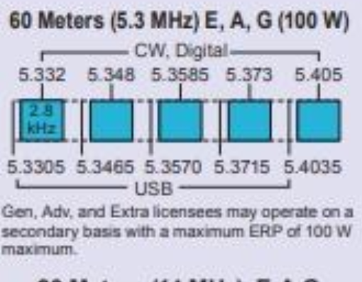

[Date Prev][Date Next][Thread Prev][Thread Next][Date Index][Thread Index]
Re: [NCDXC Chat] [MLDXCC-Spots] DX Spot: VP8PJ 5357 NOT F/H
I agree, it lacks clarity. But in fairness, there isn't a way to
present it in two sentences and the chart space is limited. The
rules are different for 60M. It was also made prior to FT8
existence.
One must know how they are getting the signals out; is it CW/FSK
or audio? In all cases, if it involves a sound card for TX, use
the USB not the digital frequencies (and keep the tones around
1500 Hz, channel center). The audio 'shifts' the VFO frequency by
adding the frequency of the tones (in the case of AFSK, typically
by 2150 Hz making your actual frequency "VFO + 2150").
Then you must know what your radio does in digital mode, Elecraft
(what I use) Data is USB, wider than normal and turns off
compression and noise reduction. Icom is DATA-U. [NEVER use
compression on ANY digital mode, ever, ditto ALC. It won't play
well (distorts, harder to decode) and you'll irritate your band
neighbors who will absolutely express their negative opinions in
sharply detailed clarity.] 60 Meters REQUIRES the use of USB ONLY
(most radios already use this mode, but verify it with yours).
With the exception of PSK31, if you can decode normally, you're
in the right setting (USB, Data, Data-U), though there are
software issues that you may need 'Reverse' (HRD) to copy it.
For 60M in particular, just make DOUBLE SURE that if it uses a
sound card for TX, you're tones are centered (ish) in the
channel. If you are FSK (to further confuse it) or CW, move up
1500 Hz. (because they use the actual VFO frequency and moving up
puts you in the channel center, as required).
(PSK can be copied in either sideband, so it's not a good test of
receiver mode).
Now, having said that; if the DX station is using a mode other
then FT8, it makes a lot of sense to push the callers onto another
channel (go split). Sometimes they remember this and the Q rate
is much higher. So be ready for that, on EACH channel on 60M.
Pay attention.
I look forward to the day that it is a band more than a channel.
However the international trend is 15 watts output and I'd rather
keep the 100 watts output (ERP, relative to a half wave dipole).
I haven't played on 60 much, it was nice to see what 100 watts
could do (worked VP8 again last night, just for fun since I
already had it, that took but one call and logged)... Amazing
when both ends can hear so well, receiver noise MATTERS. A LOT!
73,
Rick NK7I
Far North Idaho
On 3/2/2020 4:24 PM, Christopher Hoover
wrote:
The digital label in the new diagram may hurt as
much at helps.
As most of us do "sound card" digital with the rig in USB,
DATA or DATA-U mode, the dial frequency for that operation
should be the USB dial frequency on the chart.
73 de AI6KG.
On Mon, Mar 2, 2020 at 8:26 AM
Rick Bates, NK7I via Chat <
chat@ncdxc.org> wrote:
My bad, that is an old file, prior to a change that was
made some years ago. Here is the new band plan (not as
clean a copy, sorry). [Note EIRP is relative to a half
wave dipole.]

On 3/2/2020 8:20 AM, Rick Bates, NK7I via Groups.Io
wrote:
I'm attaching a a partial image of the band plan issued
by the ARRL.
Basically, you set the VFO to the stated frequency
(5.357) for USB (!!) phone and digital modes and if
digital, you are supposed to use a tone around 1500 Hz
so that you are centered in the allotted bandwidth
space. Phone is limited to 2.8 kHz bandwidth (no ESSB
allowed). Pay attention to the purity of your audio
(limit compression for phone, don't overdrive ever) so
that your suppressed sidebands aren't excessive below
the VFO frequency (proper to do at all times anyway).
In the case of FT8, with a bandwidth of about 60 Hz,
(or PSK31, a bit wider) there is a bit of latitude in
choice of tones, just avoid any that the width would
approach the channel edges (leave a buffer zone) and you
should be ok. I set my tones for 1600 Hz, near channel
center.
For CW, you add 1.5 kHz to the VFO setting, so that you
are centered in the channel.
73,
Rick NK7I

Rick,
I worked them at 0403Z last evening as well, with my rotatable dipole and 75W. I was in "Hound" mode. Got a +03 and sent a +02. My dipole was at around 25' on top of my nested crank-up due to high winds here.
I used the frequency I saw spotted, 5357.8, to call. But now I'm wondering if I violated the NTIA rules about channelization on 60M. I couldn't find standard freqs for FT8.
Any suggestions?
73,
Steve
N6SJ
-----Original Message-----
From: Chat <chat-bounces@ncdxc.org> On Behalf Of Rick Bates, NK7I via Chat
Sent: Sunday, March 1, 2020 11:02 PM
To: Chat NCDXC <chat@ncdxc.org>; MLDXCC-Spots@groups.io
Subject: [NCDXC Chat] DX Spot: VP8PJ 5357 NOT F/H
One call and logged, not busy -3 (them) +03 (me); pretty loud for being QRP ;-)
100 watts rotatable dipole @ 60'
Rick NK7I
_______________________________________________
Chat mailing list
Chat@ncdxc.org
http://mail.ncdxc.org/mailman/listinfo/chat_ncdxc.org
_._,_._,_
Groups.io Links:
You receive all messages sent to this group.
View/Reply
Online (#559) | Reply To Group
| Reply To Sender
| Mute This Topic
| New Topic
Your
Subscription | Contact Group
Owner | Unsubscribe
[Rick.NK7I@gmail.com]
_._,_._,_
_______________________________________________
Chat mailing list
Chat@ncdxc.org
http://mail.ncdxc.org/mailman/listinfo/chat_ncdxc.org